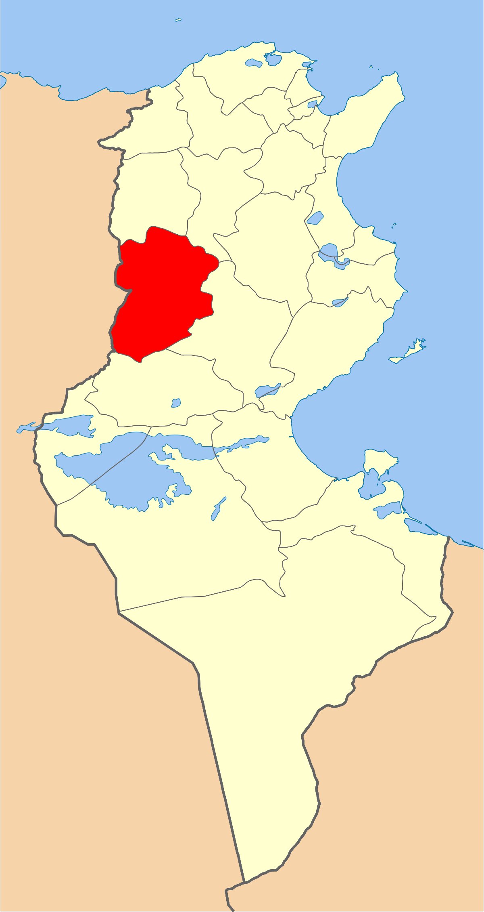
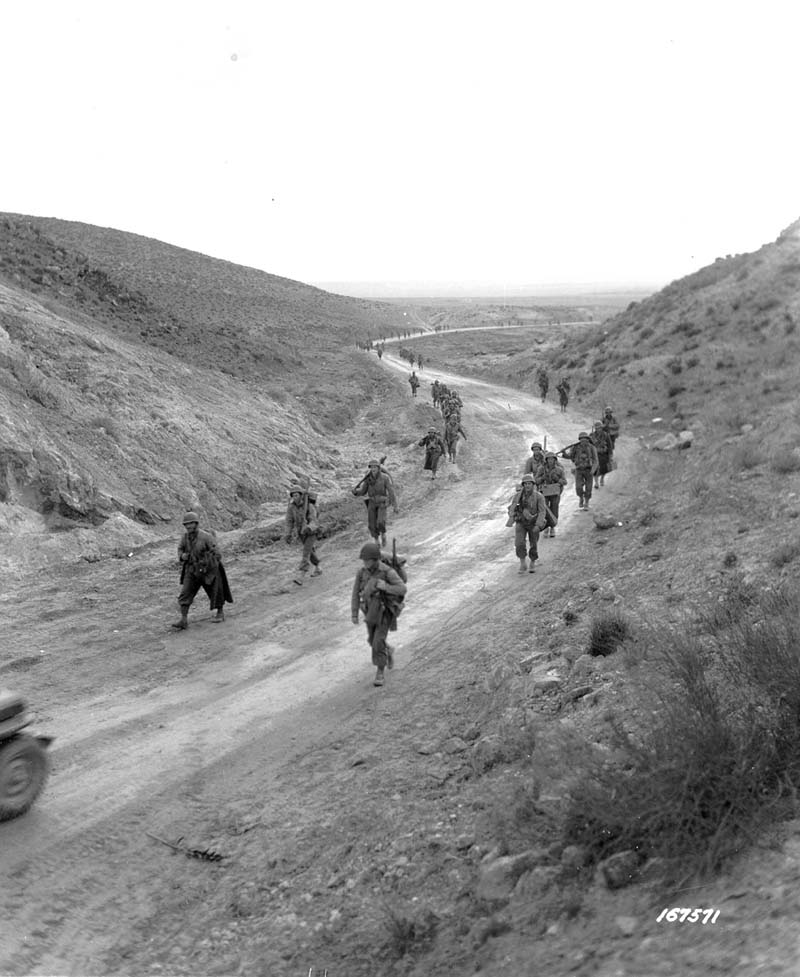
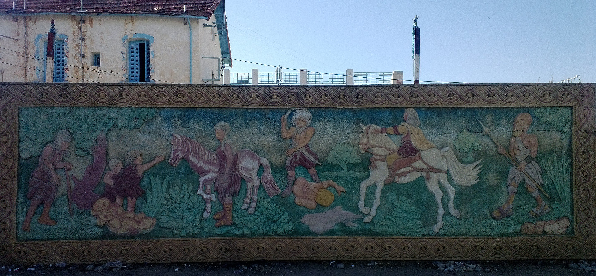
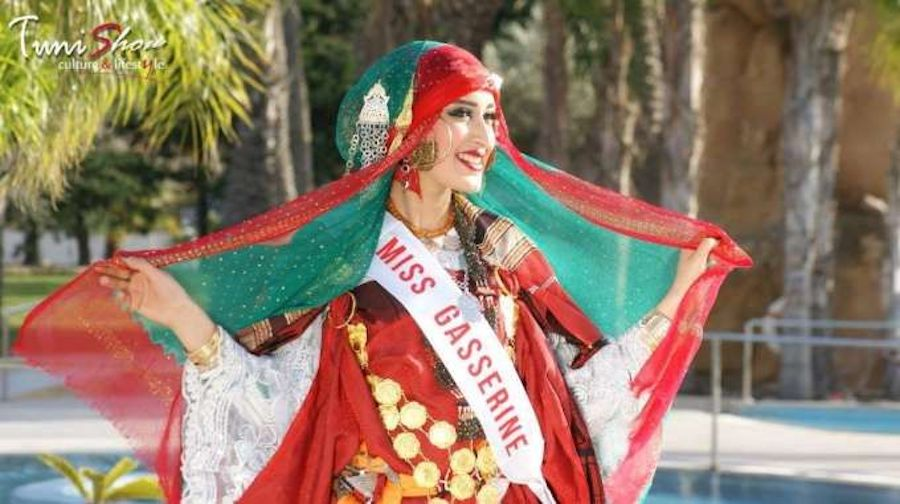
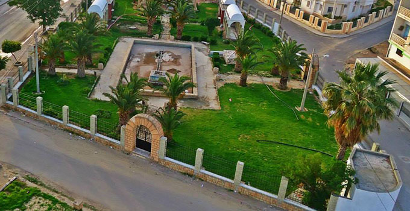

Kasserine
Le gouvernorat de Kasserine est situé au centre ouest du pays, tout au long de la frontière algérienne (200 Km). Il est limité par les gouvernorats d'El Kef et Siliana au nord, Sidi Bouzid à l'est et le gouvernorat de Gafsa au sud. La région dispose d'importantes richesses naturelles qui constituent la base d'une multitude d'opportunités d'investissement de transformation.
Sbeitla
Djbel Chambi
Djbel Mghila
Thala
Quelques chiffres
Superficie
8 260 km²
Nombre de maisons
82 000
Habitants
439 243
Localisation
Kasserine est située dans le centre-ouest de la Tunisie. La ville se trouve à 200 kilomètres à l'ouest de Sfax, 246 kilomètres au sud-ouest de Tunis et 166 kilomètres au sud-ouest de Sousse. Située à une altitude supérieure à 656 mètres, la ville est entourée par trois montagnes : les djebels Chambi à l'ouest (point culminant de la Tunisie à 1 544 mètres), Semmama au nord (1 314 mètres) et Essalloum à l'est (1 373 mètres).

Histoire
Kasserine porte une histoire particulière de lutte et de révoltes. En 1864, dans un contexte d'augmentation de la mejba, les tribus sortent d'une perspective strictement locale et se lient avec d'autres tribus pour organiser une révolte. Les premières populations à se révolter sont les tribus de l'intérieur du pays, à savoir les Mejer et les Fraichiches de Kasserine, Sbeïtla, Jilma, Thala et Tajerouine, les Jlass et les Oueslat de la région de Kairouan, les Ouled Ayar de la région de Makthar et les Hemamma de la région de Sidi Bouzid. Ces mouvements, désordonnés dans un premier temps, se coordonnent et portent Ali Ben Ghedhahem, cheikh des Majer de Thala, à la tête du mouvement de révolte. En avril 1864, constatant l'ampleur de la révolte, Sadok Bey annonce qu'il renonce au doublement de la mejba. Kasserine joue également un rôle décisif lors des combats de la bataille de Kasserine, au cours de la Seconde Guerre mondiale : les Alliés s'y font infliger une défaite par les forces germano-italiennes de l'Axe.
Culture

hover me
hover me
hover me